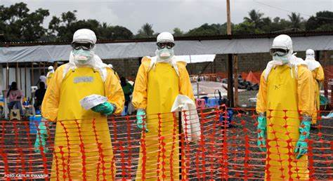

Acabar com as epidemias

A meta 3.3 dos Objetivos de Desenvolvimento Sustentável (ODS) estabelecidos pela Organização das Nações Unidas (ONU) até 2030 representa um compromisso global em erradicar as epidemias de algumas das doenças mais devastadoras, além de combater diversas outras doenças transmissíveis que impactam significativamente a saúde pública em todo o mundo.
A abordagem multifacetada dessa meta visa não apenas eliminar as epidemias de AIDS, tuberculose, malária e doenças tropicais negligenciadas, mas também a enfrentar desafios adicionais, como a hepatite, doenças transmitidas pela água e outras doenças infecciosas. Este esforço conjunto reconhece a necessidade de estratégias abrangentes e inovadoras para prevenir, controlar e tratar uma variedade de doenças transmissíveis que afetam milhões de pessoas globalmente.
No contexto da epidemia de AIDS, é imperativo fortalecer os programas de prevenção, diagnóstico e tratamento do HIV, garantindo acesso universal a terapias antirretrovirais. A promoção de práticas seguras, educação sobre saúde sexual e reprodutiva e a redução do estigma associado ao HIV são componentes cruciais para alcançar o fim da epidemia.
A tuberculose, outra doença significativa, exige estratégias aprimoradas de detecção precoce, tratamento eficaz e prevenção. Investir em pesquisa para o desenvolvimento de novos medicamentos e vacinas é essencial para combater as cepas resistentes aos medicamentos e melhorar os índices de cura.
A malária, especialmente prevalente em regiões tropicais, necessita de esforços para o controle do mosquito vetor, distribuição de mosquiteiros impregnados com inseticidas e acesso generalizado a tratamentos antimaláricos eficazes. Além disso, a pesquisa contínua e a inovação são cruciais para o desenvolvimento de vacinas e métodos de prevenção mais avançados.
As doenças tropicais negligenciadas, muitas vezes afetando populações vulneráveis em regiões de baixa renda, requerem atenção especial. A promoção do acesso a tratamentos eficazes, investimentos em pesquisa e desenvolvimento, e a colaboração global são fundamentais para superar essas doenças.
No combate à hepatite, doenças transmitidas pela água e outras enfermidades infecciosas, estratégias de prevenção, vacinação e melhoria das condições sanitárias desempenham papéis cruciais. A colaboração entre governos, organizações internacionais, setor privado e sociedade civil é vital para fortalecer sistemas de saúde e responder eficazmente a surtos de doenças transmissíveis.
Em resumo, a meta 3.3 é um apelo à ação global coordenada, envolvendo diversos setores e atores, para enfrentar as epidemias existentes e emergentes, garantindo que nenhuma comunidade seja deixada para trás no caminho rumo a um mundo mais saudável e resiliente. O progresso nessa frente não apenas salva vidas, mas também contribui para o desenvolvimento sustentável e a promoção da equidade em escala global.